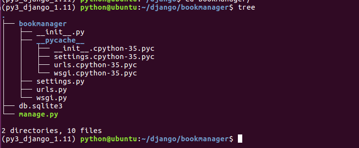
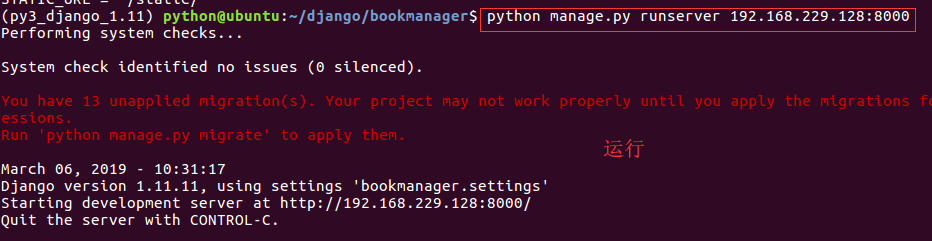
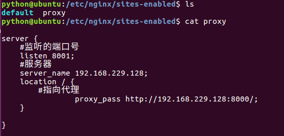
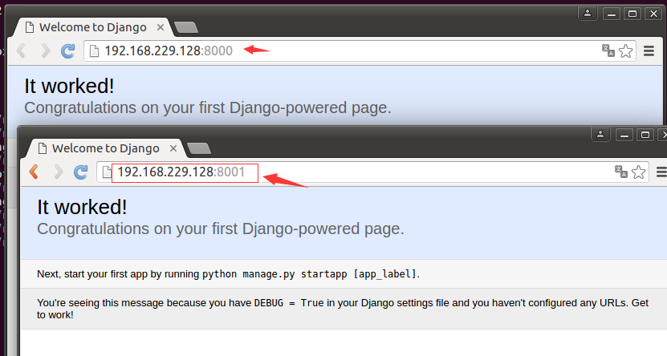

nginx反向代理配置
官方的代理属性很多，我们主要介绍proxy_pass和proxy_set_header属性
官方代码示例
location / {
proxy_pass http://localhost:8000; 设定请求跳转后的地址，可以使用hostname或IP:Port形式
proxy_set_header X-Real-IP $remote_addr; 后端请求携带原始请求的真实IP地址
}
属性详解：
proxy_pass指令设置被代理服务器的地址和被映射的URI，地址可以使用主机名或IP加端口号的形式
proxy_set_header 该指令允许重新定义和添加一些请求标题行，这些标题行将被传输到代理服务器
nginx代理实践
项目准备工作
在django虚拟环境中通过 django-admin startproject project创建一个工程

修改工程中的settings.py文件的allowed_hosts

运行工程python manage.py runserver 192.168.229.128:8000

代理配置
在/etc/nginx/sites-enabled目录下创建目录下proxy配置文件
server {
#监听的端口号
listen 8001;
#服务名
server_name 192.168.229.128;
location / {
#指向代理
proxy_pass http://192.168.229.128:8000/;
}
}

检查nginx配置后重载服务
/usr/sbin/nginx -t
systemctl reload nginx
查看效果
